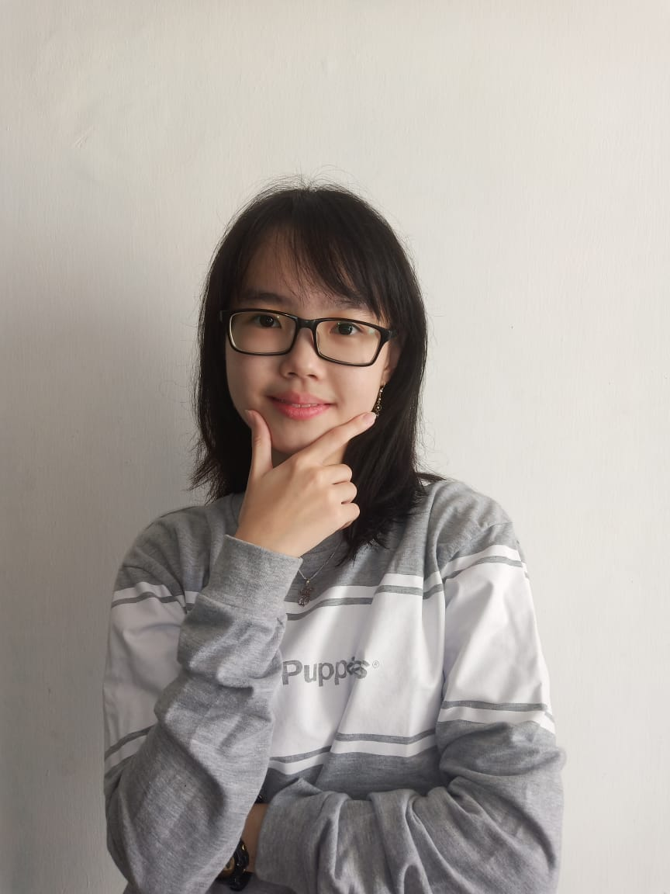

A website made for sharing
Biodata

Full Name:
Evelyn Tjitrodjojo
Nick Name:
Evelyn
Email:
Marsella.eve@gmail.com
Phone:
081330909500
Address:
Petemon, Surabaya
Place, Date of Birth:
Surabaya, 19 March 2000
LinkedIn:
linkedin.com/in/evelyntj
Study:
5th Semester Informatics Engineering ITS
Hi, Readers!
Currently I am one of the 5th semester students of informatics. With this website, I would like to share about my hometown, Surabaya. I have known my hometown for 20 years. Hopefully readers can enjoy a piece of the story from my hometown. I hope that readers can also travel directly to Surabaya and enjoy all the beauty of this city as I have been.
Next, I will tell you why I created this website. In addition to sharing with readers, this website is used for assessment of quiz 1 of web programming courses. But I am very grateful and really enjoy creating this web because I like designing websites or applications (UI / UX Design). One of my dreams or a job that I love is to become a UI / UX Designer. Hopefully one day it can be achieved. Please pray for me, readers.
Finally, if readers want to communicate directly with the author, or just follow each other, I will provide some of the social media contacts I have. Readers can communicate with me about anything, such as technology, life, sharing experiences, work, traveling, or whatever.
Add My Instagram
@m.evelyn_tj
Contact My Line
evelyntjitrodjojo
Add My Telegram
@marsellaeve